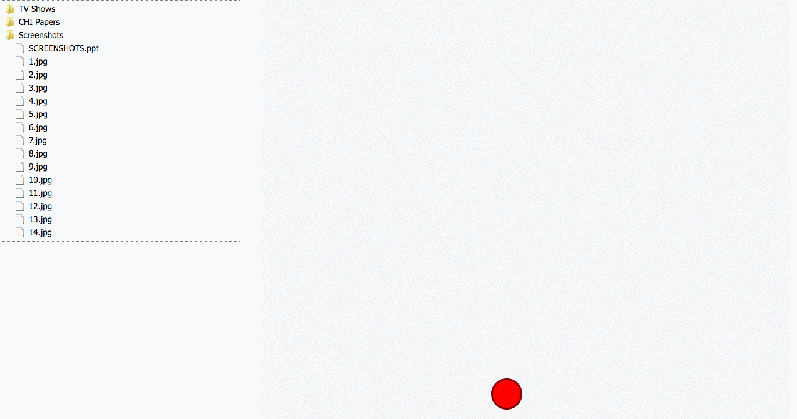

Interfaces for Programming By Demonstration
Interaction Design
 Go to portfolio.
Go to portfolio.
Design Case Study
Programming by Demonstration (PbD) is a technique whereby end users can program a computer by demonstrating a sequence of operations, rather than writing code in a programming language. As a design exercise in a graduate course on Human-Computer Interaction, my team and I were tasked with coming up with a speculative user interface design for a PbD system, assuming that we had access to a machine learning program capable of extracting user intent from a sequence of repeated operations.
We developed AuRe (Automatic Repeater). It takes the form of a circular red UI element (or recording head) modeled after Facebook’s messenger chat heads and the red recording light used on audio equipment. By clicking on the AuRe, a user can trigger a ‘recording phase’, where they demonstrate a sequence of GUI operations. After the demonstration takes place, the machine learning algorithm extracts invariant operations, and users can edit the automatically-generated sequence in a menu view before repeating it on a set of targets.
We validated the effectiveness of the design for expert users with a GOMS analysis, and created a UI prototype (including a "dummy" file explorer and PowerPoint application) that we then demonstrated live to our instructors and peers. (The machine learning portion of the system was "faked" for the demo.)
This work was completed with two other graduate students, John Kanji and Harris Chan